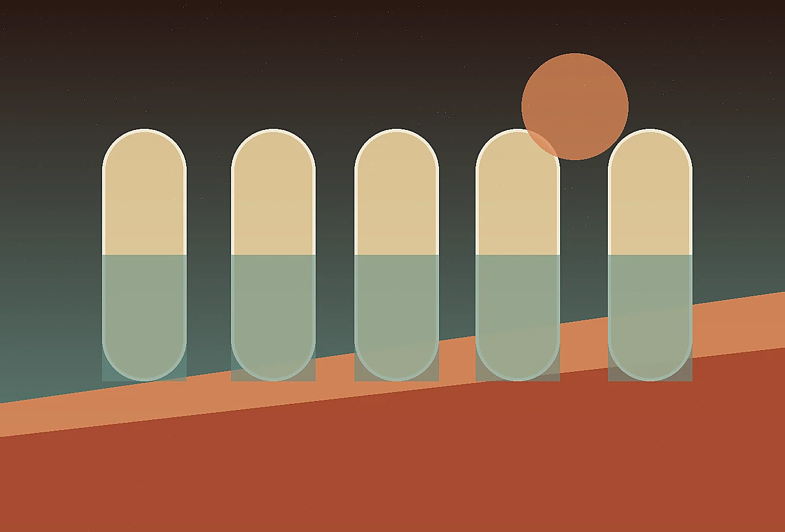

Contact details
19 Saguaro Fold, Santa Fe, NM 87501+1 (505) 555-0129
studio@mirageloom.example

Desert futurist hospitality atelier
Share the challenge, place, team, or upcoming deadline. Mirage Loom replies with a clear next step, not a canned pitch.
Design the arrivalTell us what is changing, who is involved, and what deadline or decision is creating pressure. A useful first note does not need polish. It needs context. We will reply with the right format for a conversation, diagnostic, or referral.
Within two business days, a senior lead reviews the note and suggests a focused next step. If the project is not a fit, we will say so directly and recommend another route when possible.

Helpful materials include photographs, menus, route maps, audience notes, board deadlines, existing documents, or a simple list of what feels stuck. Send only what is safe and appropriate to share.
Useful starting materials include site photographs, climate notes, guest profiles, architectural sketches, staffing assumptions, investment deadlines, or even a rough description of the atmosphere you want guests to carry home. If the property is confidential, send a general note first and we will establish an appropriate way to continue.
Mirage Loom is comfortable entering early vision work, pre-opening refinement, repositioning, or a rescue moment when the property looks beautiful but the guest journey feels unresolved. Describe the landscape, the intended audience, what has already been decided, and which decisions still feel too abstract to move forward confidently.
Early conversations often become clearer when we separate the dream of the retreat from the sequence required to host it. We will help identify which parts need concept direction, which parts need operational detail, and which parts should wait until the land, staff, or investment plan has answered more questions.
When travel is difficult, we can begin remotely with climate data, drawings, photographs, guest notes, and a focused interview, then reserve site time for decisions that truly require being in the landscape.